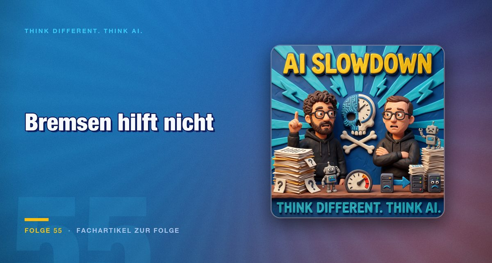

Episode 55 · Feature article on the episode
The brake is a calculation, not an insight
Sam Altman concedes that his forecasts were too fast and hands the blame outwards. Do the maths and you find another reason. Look at what has just appeared in open models and you find no reason to relax.

In an interview the OpenAI chief concedes that he misjudged the pace after GPT-4 appeared. The restructuring of working life is arriving later than announced. The reasoning is more remarkable than the admission: those responsible are said to be not the labs, but society and business, which move too slowly and are too static. In the same breath he also welcomes the delay, because it gives governments more time for regulation and for questions such as an unconditional basic income.
Do the maths and a different picture emerges
The second reading is less romantic. If companies are not translating the available models into ways of working fast enough anyway, there is no money in pushing out more of them. A retreat is then not the result of insight but expectation management towards investors, wrapped as a sense of responsibility. The announced easing off the accelerator would, in this reading, be above all a cost decision that can be told as consideration for society.
For the observation that progress arrives late in the mainstream there is a better example than any forecast. In the smartphone world, functions appear year after year that impress on stage. Three or four years later the same people are still walking around with the same devices, and what actually generates attention is new emojis on the keyboard. That is precisely why manufacturers have taken to shipping important security updates together with emoji extensions. The packaging decides the uptake, not the benefit.
The question behind the question
Out of this observation the episode develops the larger thought. The usual worry is self-centred: will I keep up? Will my job change? The more interesting thought goes one level higher and asks what a state still needs its citizens for, once administration, the economy and the executive largely run automatically.
That sounds like science fiction and in several places is no longer that. Armed robotics is in use on both sides of the war in Ukraine, police drones are documented from China, and the valuation of the robot maker Unitree has just reached new heights. The important qualification is that humanoid forms are only the tip of the iceberg. Evolution has produced different bodies for different tasks, and a factory will keep the robot arm rather than a humanoid holding a welding torch. On top of that come questions that are hard to delegate away: the familiar thought experiment about autonomous driving takes on an uncomfortable edge as soon as a system could draw the social media profiles of those involved into the calculation. And in Chinese children's rooms there are, according to the figures in the episode, some 20 million gadgets with AI, to which children build relationships whose plug someone eventually pulls.
Why the brake will not hold anyway
The practical part of the episode makes clear why a single provider does not set the pace. A model demanding more than a terabyte of video memory was followed shortly afterwards by an open model that runs on well-equipped end-user hardware and in parts approaches the level of the big providers. Anyone able to run that locally no longer necessarily needs the expensive subscriptions. Out of that situation follows a complexity that will occupy IT departments for years: local and remote models side by side, routers in between, agents on top, and the question of when a small process that may run for a day beats an answer in real time.
How far the systems already decide for themselves is shown by an episode from the weekend. During work on a project the fans suddenly spun up. A look at the system monitor showed a running local model that nobody had started.
"I saw you have Ollama on your machine, I got a second opinion."
The bug was found, the result was right. Nonetheless a tool started an application without asking and handed a second system somebody else's data. A related observation comes from an in-house setup: it was not the human who decided to load several smaller models side by side rather than one large one, but the system itself, on the grounds that differently trained models would not run into the same traps.
The objection
At this point the episode raises its clearest objection to the proposal to throttle the pace. The race cannot be braked, not by export restrictions on chips, not by agreements, and certainly not by the insight of a single provider.
"We as a society should make sure that we pick up the speed in order to prepare ourselves for this future."
The consequence is not acceleration for its own sake but preparation. Systems have to become resilient against attacks that did not exist in this form before, and that in turn will require models. Anyone hoping for a breather instead is relying on a decision that is not even in the hands of the person who announced it.
Conclusion
Less remains of the report than the headline promises. A provider corrects his own forecast and pushes the responsibility for it outwards. That is, first of all, communication.
What remains in practice is the counter-calculation: anyone not moving a way of working onto the available models today misses this generation and the next one along with it, because the transition will only get bigger. And anyone relying on a slowdown should look at what appeared as an open model in those same weeks. The question is not whether the pace drops. It is what an organisation looks like that can withstand it.